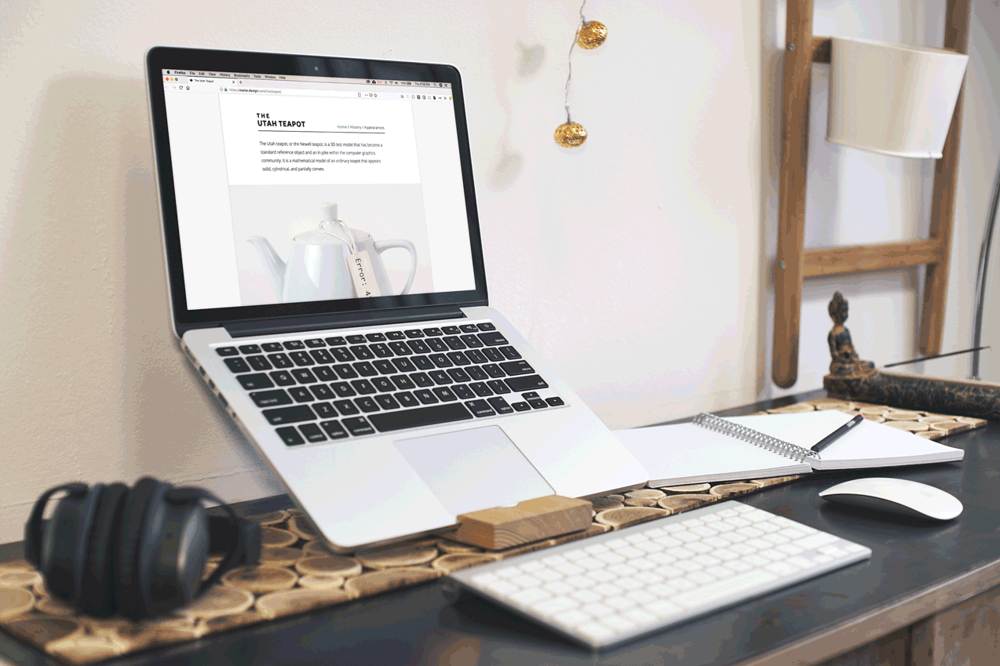
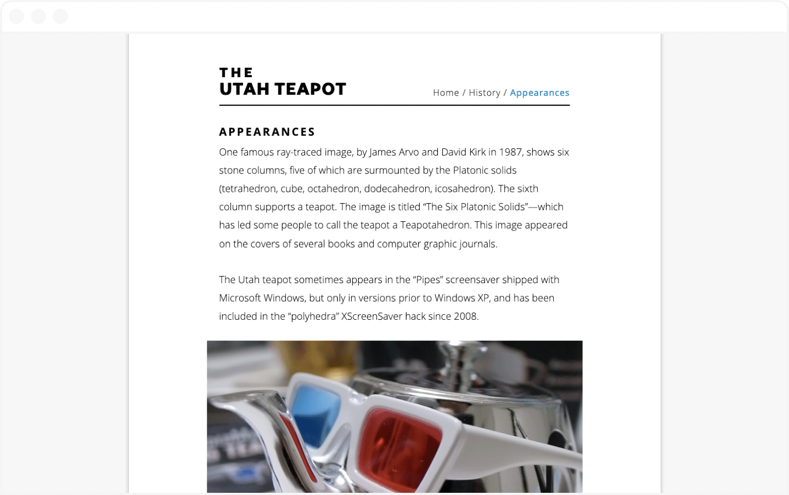

Utah Teapot
Redesign, Digital
The purpose of this project was to redesign of the Wikipedia page for the Utah Tea Pot. The main goal of the redesign was to create a lightweight WCAG 2.0 AA compliant, responsive website that struck a balance between aesthetics and readability.
↓

The most important teapot in computer graphics history!

Keeping with the general design ethos of Wikipedia, I decided to use a very minimal colour scheme consisting of two shades of blue, black, white, and gray. I used a fairly large sized Open Sans Regular — 18px on desktop — for my body text for ease of reading. The website’s wordmark is made up of two sizes of Halcyon Bold. I also added a pagination in the footer of each page, so that when the reader reaches the end of any given page they don’t need to scroll back to the top navigation.